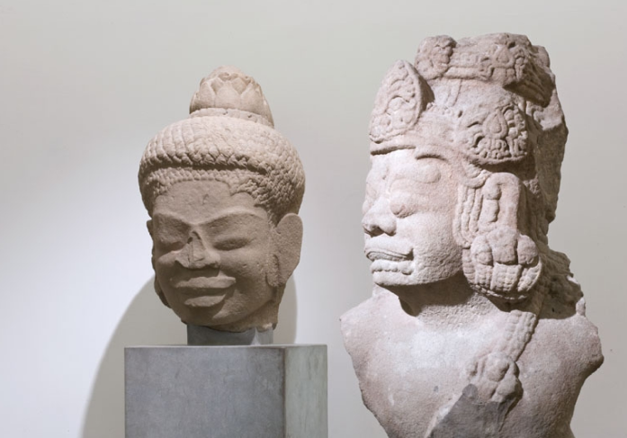
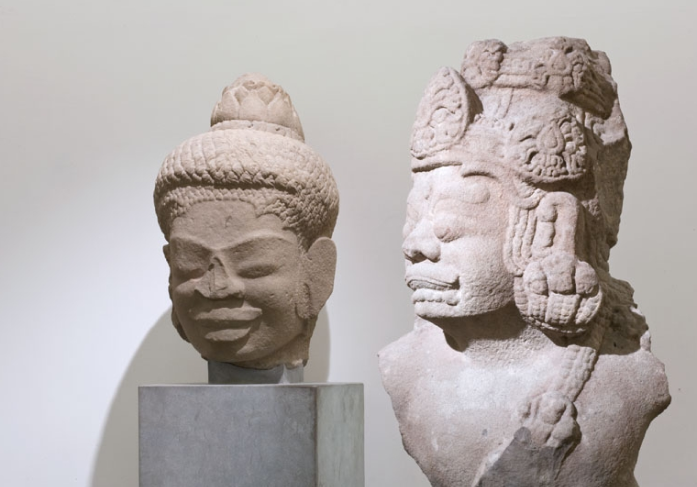

Le domaine archéologique s’ouvre sur la période néolithique avec des jades et des céramiques, se poursuit avec des bronzes des dynasties Shang et Zhou, œuvres majeures auxquelles il convient d’ajouter d’importantes collections d’éléments de harnachement et de charrerie, de miroirs et d’agrafes en bronze ainsi que de numismatique et de laques.
Dans le domaine de la statuaire, outre la grande sculpture relevant de l’art bouddhique (Le Panthéon bouddhique et le département d’Asie centrale) plusieurs donations – donations Calmann, Rousset, Jacob, Polain – ont permis la constitution d’une collection de mingqi Han et Tang, exceptionnelle par la variété des types évoqués.
Le domaine des arts décoratifs constitue un panorama très complet de l’histoire de la céramique chinoise où sont représentés, à travers environ 10 000 céramiques –
grès, céladons et porcelaines – les fours les plus importants, les grandes innovations techniques ou les différentes facettes du goût ayant présidé à la commande,
selon qu’il s’agit de pièces d’exportation ou de commandes impériales.
Le mobilier est représenté par d’importantes pièces en bois laqué et en bois de rose.
La peinture est représentée par un millier d’oeuvres s’échelonnant des Tang aux Qing.
 
